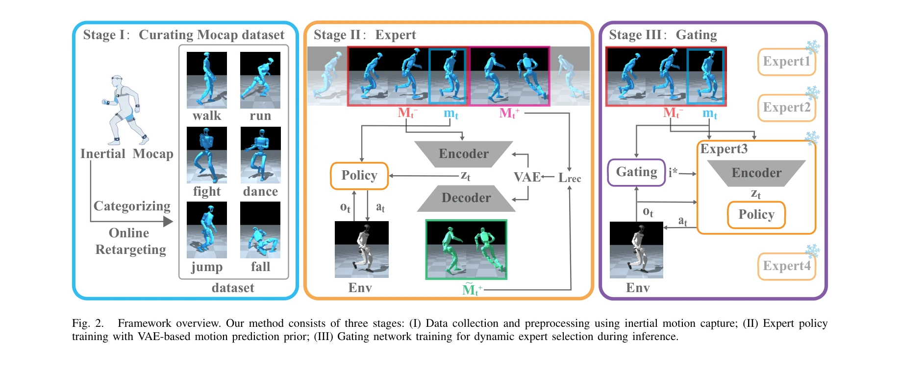

Essence

Fig. 1.
TeleGate는 가벼운 gating network를 통해 multiple domain-specific expert policies를 동적으로 선택하여 humanoid robot의 real-time whole-body teleoperation을 수행하며, VAE 기반 motion prior를 도입하여 미래 정보 없이도 점프나 일어서기 같은 동적 동작을 예측적으로 제어한다.
저자: Jie Li, Bing Tang, Feng Wu, Rongyun Cao | 날짜: 2026-02-10 | URL: https://arxiv.org/abs/2602.09628
Fig. 1.
TeleGate는 가벼운 gating network를 통해 multiple domain-specific expert policies를 동적으로 선택하여 humanoid robot의 real-time whole-body teleoperation을 수행하며, VAE 기반 motion prior를 도입하여 미래 정보 없이도 점프나 일어서기 같은 동적 동작을 예측적으로 제어한다.
Fig. 1.

Fig. 2.
총평: TeleGate는 gated expert selection과 VAE 기반 motion prior를 결합하여 제한된 데이터로도 높은 정밀도의 real-time whole-body humanoid teleoperation을 실현하는 혁신적인 프레임워크이며, Unitree G1에서의 성공적인 physical deployment로 실제 적용 가능성을 입증했다.